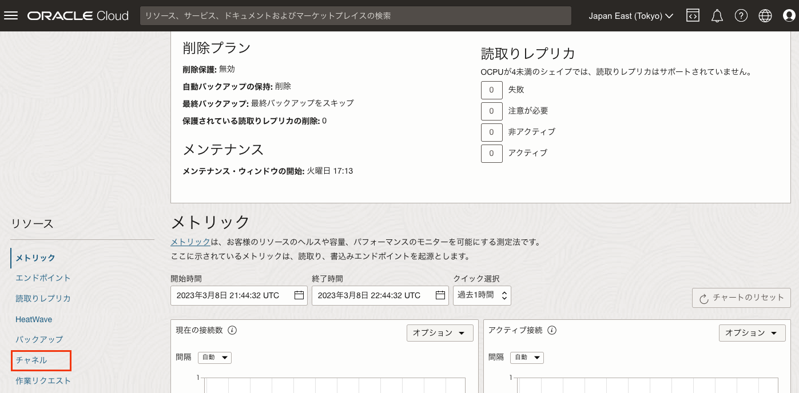

Oracle Cloud Infrastructure では、MySQL Database Service(MDS)が利用できます。MDSはAlways Freeの対象ではないため、使用するためにはクレジットが必要ですが、トライアルアカウント作成時に付与されるクレジットでも使用可能です。
このチュートリアルでは、MDSからMDSへのレプリケーションを構成することで、MDSでのレプリケーションの構成方法を確認します。MDSはソースにもレプリカにもなれますが、マネージドサービスであるが故の注意事項や制限事項もあるため、それらについても説明します。
所要時間 : 約50分 (約20分の待ち時間含む)
前提条件 :
- Oracle Cloud Infrastructure の環境(無料トライアルでも可) と、管理権限を持つユーザーアカウントがあること
- OCIコンソールにアクセスして基本を理解する - Oracle Cloud Infrastructureを使ってみよう(その1) を完了していること
- クラウドに仮想ネットワーク(VCN)を作る - Oracle Cloud Infrastructureを使ってみよう(その2) を完了していること
- インスタンスを作成する - Oracle Cloud Infrastructureを使ってみよう(その3) を完了していること
注意 : チュートリアル内の画面ショットについては Oracle Cloud Infrastructure の現在のコンソール画面と異なっている場合があります。
目次：
- 1. レプリケーションとは?
- 2. 本チュートリアルで作成する構成の構成図
- 3. MDSの作成(ソース用のMDS、レプリカ用のMDS)
- 4. レプリケーション用ユーザーの作成(ソース用のMDS、レプリカ用のMDS)
- 5. ソース用MDSのデータをダンプし、レプリカ用MDSへインポート
- 6. レプリケーションチャンネルの設定
- 7. レプリケーションの動作確認
- 8. レプリケーションフィルター(チャネルフィルター)の設定＆動作確認
- 9. レプリケーションフィルター(チャネルフィルター)の動作確認
1. レプリケーションとは?
レプリケーションはMySQLで非常に人気が高い機能で、ソースサーバーでの更新内容をレプリカサーバーに伝播できます。レプリケーションは主に高可用性や負荷分散を実現するために利用されます。
MDSは、レプリケーションを利用してソースになることもレプリカになることもできます。MDSがソースになる場合のレプリケーションをアウトバウンドレプリケーション、MDSがレプリカになる場合のレプリケーションをインバウンドレプリケーションと言います。それぞれの詳細についてはドキュメントを参照して下さい。
なお、インバウンドレプリケーションでは、以下の制限事項があります。
- 行ベースレプリケーションのみサポート
- 非同期レプリケーションのみサポート
- シングルソースレプリケーションのみサポート
- mysqlスキーマに対する更新処理はレプリケーションできない
また、HA構成のMDSではインバウンドレプリケーションを構成できませんが、シングル構成のMDSでインバウンドレプリケーションを構成後、そのMDSをHA構成に変更することでHA構成のMDSでもインバウンドレプリケーションを使用できます。
2. 本チュートリアルで作成する構成の構成図
本チュートリアルでは、以下の構成を作成します。
3. MDSの作成(ソース用のMDS、レプリカ用のMDS)
-
ソース用のMDSを作成します。クラウドでMySQL Databaseを使う - Oracle Cloud Infrastructureを使ってみよう(その9) の手順に従って「Source」という名前でソース用のMDSを作成します。「2. MDSの作成」だけでなく、「3. セキュリティリストの修正(イングレス・ルールの追加)」、「4. MySQLクライアントのインストール」、「5. 作成したMDSの確認」まで実行し、worldデータベース、world_xデータベースも作成しておきます。
-
レプリカ用のMDSを作成します。クラウドでMySQL Databaseを使う - Oracle Cloud Infrastructureを使ってみよう(その9) の「2. MDSの作成」の手順に従って「Replica」という名前でレプリカ用のMDSを作成します。 (「2. MDSの作成」より後の手順は実行不要です)
4. レプリケーション用ユーザーの作成(ソース用のMDS、レプリカ用のMDS)
-
レプリケーション用のユーザーを作成し、REPLICATION SLAVE権限を付与します。以下の操作は、ソース用のMDS、レプリカ用のMDSの両方で実行します。
実行コマンド例(コピー＆ペースト用：Source 及び Replica で実行)
CREATE USER 'rpl'@'%' IDENTIFIED BY 'MySQL_8.0' REQUIRE SSL;GRANT REPLICATION SLAVE on *.* to 'rpl'@'%';実行例 (Source 及び Replica で実行)
mysql> CREATE USER 'rpl'@'%' IDENTIFIED BY 'MySQL_8.0' REQUIRE SSL; Query OK, 0 rows affected (0.00 sec) mysql> GRANT REPLICATION SLAVE on *.* to 'rpl'@'%'; Query OK, 0 rows affected (0.00 sec)
5. ソース用MDSのデータをダンプし、レプリカ用MDSへインポート
レプリケーションを構成する前に、ソース用のDBとレプリカ用のDBを同じ状態にします。このチュートリアルでは、ソース用DBのデータをMySQL Shellのデータダンプユーリティティを使用してダンプし、それをレプリカ用DBにインポートします。
-
ソース用のMDSにMySQL Shellを使用して接続し、インスタンスダンプユーリティティを使用してデータをダンプします。MDSにデータをインポートするためには、MDSとの互換性を確保したダンプファイルを取得する必要があるため、ocimdsオプションをtrueにしてデータをダンプします。また、dryRunオプションをtrueにすることでダンプは取得せずにMDSとの互換性チェックの結果を表示できるため、まずはこれらのオプションをtrueにしてインスタンスダンプユーティリティを実行します。
実行コマンド例(コピー＆ペースト用)
mysqlsh -u root -p -h Source.sub01311142371.tutorialvcn.oraclevcn.comutil.dumpInstance("/home/opc/mds", {dryRun: true, ocimds: true})実行例：MySQL Shellを使ってソースのMDSに接続
[opc@testvm1 ~]$ mysqlsh -u root -p -h Source.sub01311142371.tutorialvcn.oraclevcn.com MySQL Shell 8.0.32 Copyright (c) 2016, 2023, Oracle and/or its affiliates. Oracle is a registered trademark of Oracle Corporation and/or its affiliates. Other names may be trademarks of their respective owners. Type '\help' or '\?' for help; '\quit' to exit. Creating a session to 'root@TestMDS.sub01311142371.tutorialvcn.oraclevcn.com' Fetching schema names for auto-completion... Press ^C to stop. Your MySQL connection id is 246 Server version: 8.0.32-cloud MySQL Enterprise - Cloud No default schema selected; type \use <schema> to set one.実行例：インスタンスダンプユーティリティを実行 (Source で実行)
JS > util.dumpInstance("/home/opc/mds", {dryRun: true, ocimds: true}) dryRun enabled, no locks will be acquired and no files will be created. Acquiring global read lock Global read lock acquired Initializing - done 2 out of 6 schemas will be dumped and within them 7 tables, 0 views. 5 out of 8 users will be dumped. Gathering information - done All transactions have been started Locking instance for backup Global read lock has been released Checking for compatibility with MySQL Database Service 8.0.32 ERROR: User 'administrator'@'%' is granted restricted privileges: BACKUP_ADMIN, FLUSH_OPTIMIZER_COSTS, FLUSH_STATUS, FLUSH_TABLES, FLUSH_USER_RESOURCES, ROLE_ADMIN (fix this with 'strip_restricted_grants' compatibility option) ERROR: User 'ociadmin'@'127.0.0.1' is granted restricted privileges: AUDIT_ABORT_EXEMPT, AUDIT_ADMIN, AUTHENTICATION_POLICY_ADMIN, BACKUP_ADMIN, BINLOG_ADMIN, BINLOG_ENCRYPTION_ADMIN, CLONE_ADMIN, CREATE TABLESPACE, ENCRYPTION_KEY_ADMIN, FILE, FIREWALL_EXEMPT, FLUSH_OPTIMIZER_COSTS, FLUSH_STATUS, FLUSH_TABLES, FLUSH_USER_RESOURCES, GROUP_REPLICATION_ADMIN, GROUP_REPLICATION_STREAM, INNODB_REDO_LOG_ARCHIVE, INNODB_REDO_LOG_ENABLE, PASSWORDLESS_USER_ADMIN, PERSIST_RO_VARIABLES_ADMIN, PROXY, RELOAD, REPLICATION_SLAVE_ADMIN, ROLE_ADMIN, SENSITIVE_VARIABLES_OBSERVER, SERVICE_CONNECTION_ADMIN, SESSION_VARIABLES_ADMIN, SET_USER_ID, SHOW_ROUTINE, SHUTDOWN, SUPER, SYSTEM_USER, SYSTEM_VARIABLES_ADMIN, TABLE_ENCRYPTION_ADMIN (fix this with 'strip_restricted_grants' compatibility option) ERROR: User 'ocirpl'@'%' is granted restricted privileges: SERVICE_CONNECTION_ADMIN, SYSTEM_USER (fix this with 'strip_restricted_grants' compatibility option) ERROR: User 'root'@'%' is granted restricted privileges: BACKUP_ADMIN, FLUSH_OPTIMIZER_COSTS, FLUSH_STATUS, FLUSH_TABLES, FLUSH_USER_RESOURCES, PROXY, ROLE_ADMIN (fix this with 'strip_restricted_grants' compatibility option) NOTE: Database `world` had unsupported ENCRYPTION option commented out NOTE: Database `world_x` had unsupported ENCRYPTION option commented out Compatibility issues with MySQL Database Service 8.0.32 were found. Please use the 'compatibility' option to apply compatibility adaptations to the dumped DDL. Validating MDS compatibility - done Util.dumpInstance: While 'Validating MDS compatibility': Compatibility issues were found (MYSQLSH 52004)ERRORが4つ出力されていますが、いずれもMDSでユーザーに付与できない権限が付与されたユーザーが存在することが原因です。本チュートリアルにの手順では、ユーザー情報はインポートする必要がないため、表示されているメッセージ「fix this with ‘strip_restricted_grants’ compatibility option」に従い、compatibilityに’strip_restricted_grants’を指定して回避します。
-
先ほど実行したコマンドにcompatibilityオプションを追加し、’strip_restricted_grants’を指定します。また、dryRunオプションをfalseにして実行します。
実行コマンド(コピー＆ペースト用：Source で実行)
util.dumpInstance("/home/opc/mds", {ocimds: true, compatibility: ["strip_restricted_grants"]}) \quit実行例 (Source で実行)
JS > util.dumpInstance("/home/opc/mds", {ocimds: true, compatibility: ["strip_restricted_grants"]}) Acquiring global read lock Global read lock acquired Initializing - done 2 out of 6 schemas will be dumped and within them 7 tables, 0 views. 5 out of 8 users will be dumped. Gathering information - done All transactions have been started Locking instance for backup Global read lock has been released Checking for compatibility with MySQL Database Service 8.0.32 NOTE: User 'administrator'@'%' had restricted privileges (BACKUP_ADMIN, FLUSH_OPTIMIZER_COSTS, FLUSH_STATUS, FLUSH_TABLES, FLUSH_USER_RESOURCES, ROLE_ADMIN) removed NOTE: User 'ociadmin'@'127.0.0.1' had restricted privileges (AUDIT_ABORT_EXEMPT, AUDIT_ADMIN, AUTHENTICATION_POLICY_ADMIN, BACKUP_ADMIN, BINLOG_ADMIN, BINLOG_ENCRYPTION_ADMIN, CLONE_ADMIN, CREATE TABLESPACE, ENCRYPTION_KEY_ADMIN, FILE, FIREWALL_EXEMPT, FLUSH_OPTIMIZER_COSTS, FLUSH_STATUS, FLUSH_TABLES, FLUSH_USER_RESOURCES, GROUP_REPLICATION_ADMIN, GROUP_REPLICATION_STREAM, INNODB_REDO_LOG_ARCHIVE, INNODB_REDO_LOG_ENABLE, PASSWORDLESS_USER_ADMIN, PERSIST_RO_VARIABLES_ADMIN, PROXY, RELOAD, REPLICATION_SLAVE_ADMIN, ROLE_ADMIN, SENSITIVE_VARIABLES_OBSERVER, SERVICE_CONNECTION_ADMIN, SESSION_VARIABLES_ADMIN, SET_USER_ID, SHOW_ROUTINE, SHUTDOWN, SUPER, SYSTEM_USER, SYSTEM_VARIABLES_ADMIN, TABLE_ENCRYPTION_ADMIN) removed NOTE: User 'ocirpl'@'%' had restricted privileges (SERVICE_CONNECTION_ADMIN, SYSTEM_USER) removed NOTE: User 'root'@'%' had restricted privileges (BACKUP_ADMIN, FLUSH_OPTIMIZER_COSTS, FLUSH_STATUS, FLUSH_TABLES, FLUSH_USER_RESOURCES, PROXY, ROLE_ADMIN) removed NOTE: Database `world_x` had unsupported ENCRYPTION option commented out NOTE: Database `world` had unsupported ENCRYPTION option commented out Compatibility issues with MySQL Database Service 8.0.32 were found and repaired. Please review the changes made before loading them. Validating MDS compatibility - done Writing global DDL files Writing users DDL Running data dump using 4 threads. NOTE: Progress information uses estimated values and may not be accurate. Writing schema metadata - done Writing DDL - done Writing table metadata - done Starting data dump 100% (10.84K rows / ~10.80K rows), 0.00 rows/s, 0.00 B/s uncompressed, 0.00 B/s compressed Dump duration: 00:00:00s Total duration: 00:00:00s Schemas dumped: 2 Tables dumped: 7 Uncompressed data size: 514.22 KB Compressed data size: 188.81 KB Compression ratio: 2.7 Rows written: 10843 Bytes written: 188.81 KB Average uncompressed throughput: 514.22 KB/s Average compressed throughput: 188.81 KB/s JS > \quit Bye! -
“/home/opc/mds”配下にダンプされたファイルが出力されていることを確認後、ダンプロードユーティリティをレプリカサーバーで実行するために、MySQL Shellを使ってレプリカサーバーに接続します。
実行コマンド例(コピー＆ペースト用：TestVM1 で実行)
ls mdsmysqlsh -u root -p -h Replica.sub01311142371.tutorialvcn.oraclevcn.com実行例 (TestVM1 で実行)
[opc@testvm1 ~]$ ls mds @.done.json world_x@city@@0.tsv.zst @.json world_x@city@@0.tsv.zst.idx @.post.sql world_x@city.json @.sql world_x@city.sql @.users.sql world_x@country@@0.tsv.zst world@city@@0.tsv.zst world_x@country@@0.tsv.zst.idx world@city@@0.tsv.zst.idx world_x@countryinfo@@0.tsv.zst world@city.json world_x@countryinfo@@0.tsv.zst.idx world@city.sql world_x@countryinfo.json world@country@@0.tsv.zst world_x@countryinfo.sql world@country@@0.tsv.zst.idx world_x@country.json world@country.json world_x@countrylanguage@@0.tsv.zst world@countrylanguage@@0.tsv.zst world_x@countrylanguage@@0.tsv.zst.idx world@countrylanguage@@0.tsv.zst.idx world_x@countrylanguage.json world@countrylanguage.json world_x@countrylanguage.sql world@countrylanguage.sql world_x@country.sql world@country.sql world_x.json world.json world_x.sql world.sql [opc@testvm1 ~]$ mysqlsh -u root -p -h Replica.sub01311142371.tutorialvcn.oraclevcn.com MySQL Shell 8.0.32 Copyright (c) 2016, 2023, Oracle and/or its affiliates. Oracle is a registered trademark of Oracle Corporation and/or its affiliates. Other names may be trademarks of their respective owners. Type '\help' or '\?' for help; '\quit' to exit. Creating a session to 'root@TestMDS2.sub01311142371.tutorialvcn.oraclevcn.com' Fetching schema names for auto-completion... Press ^C to stop. Your MySQL connection id is 404 Server version: 8.0.32-cloud MySQL Enterprise - Cloud No default schema selected; type \use <schema> to set one. JS > -
ダンプロードユーティリティを使って、レプリカサーバーにデータをインポートします。今回の手順ではユーザー情報はインポートする必要がないため、loadUsersオプションはfalseに設定して実行します。また、ダンプ取得時のソースサーバーのGTIDをレプリカサーバーに設定するためにupdateGtidSetオプションを”append”にして実行します。
実行コマンド(コピー＆ペースト用：Replica で実行)
util.loadDump("/home/opc/mds", {loadUsers: false, updateGtidSet: "append"});実行例 (Replica で実行)
JS > util.loadDump("/home/opc/mds", {loadUsers: false, updateGtidSet: "append"}); Loading DDL and Data from '/home/opc/mds' using 4 threads. Opening dump... Target is MySQL 8.0.32-cloud (MySQL Database Service). Dump was produced from MySQL 8.0.32-cloud Scanning metadata - done Checking for pre-existing objects... Executing common preamble SQL Executing DDL - done Executing view DDL - done Starting data load Executing common postamble SQL Appending dumped gtid set to GTID_PURGED 100% (514.22 KB / 514.22 KB), 0.00 B/s, 7 / 7 tables done Recreating indexes - done 7 chunks (10.84K rows, 514.22 KB) for 7 tables in 2 schemas were loaded in 0 sec (avg throughput 514.22 KB/s) 0 warnings were reported during the load. -
MySQL ShellをSQLモードに変更し、レプリカサーバーにデータがインポートされたことを確認します。
実行コマンド(コピー＆ペースト用：Replica で実行)
\sqlSHOW DATABASES;USE world;SHOW TABLES;USE world_x;SHOW TABLES;実行例 (Replica で実行)
JS > \sql Switching to SQL mode... Commands end with ; Fetching global names for auto-completion... Press ^C to stop. SQL > SHOW DATABASES; +--------------------+ | Database | +--------------------+ | information_schema | | mysql | | performance_schema | | sys | | world | | world_x | +--------------------+ 6 rows in set (0.0010 sec) SQL > USE world; Default schema set to `world`. Fetching global names, object names from `world` for auto-completion... Press ^C to stop. world SQL > SHOW TABLES; +-----------------+ | Tables_in_world | +-----------------+ | city | | country | | countrylanguage | +-----------------+ 3 rows in set (0.0018 sec) SQL > USE world_x; Default schema set to `world_x`. Fetching global names, object names from `world_x` for auto-completion... Press ^C to stop. world_x SQL > SHOW TABLES; +-------------------+ | Tables_in_world_x | +-------------------+ | city | | country | | countryinfo | | countrylanguage | +-------------------+ 4 rows in set (0.0017 sec)
6. レプリケーションチャンネルの設定
-
コンソールからレプリカ用のMDS(Replica)の詳細にアクセス後、左下のチャネルをクリックします。その後、チャネルの作成をクリックします。
 -
表示された「チャネルの作成」画面で、以下の項目を入力後、「チャネルの作成」をクリックします。
- 名前 - 任意の名前を入力します。ここでは「TestChannel」と入力しています。
- ホスト名 - ソースのMDSのホスト名(内部FQDN)もしくはプライベートIPアドレスを入力します。
- ユーザー名 - ソースのMDSに作成したレプリケーション用ユーザー名を入力します。ここでは「rpl」を入力しています。
- パスワード、パスワードの確認 - ソースのMDSに作成したレプリケーション用ユーザーのパスワードを入力します。
-
チャネルが「作成中」になり、数分後に「アクティブ」に変わります。
7. レプリケーションの動作確認
ソース用のMDSで更新処理を実行し、レプリカ用のMDSに反映されることを確認します。
-
ソース用のMDSにmysqlコマンドラインクライアントを使用して接続し、testデータベース、test.testテーブルを作成し、データをINSERTします。その後、レプリカ用のMDSでtest.testテーブルが存在することを確認し、INSERTされたデータがSELECTできることを確認します。以下の実行例ではそれぞれのMDSでの操作をまとめて掲載していますが、コンソールを2つ開いてそれぞれSourceとReplicaに接続し、1ステップずつ実行することで、各ステップ毎にリードレプリカに処理内容がレプリケーションされていることが確認できます。
実行コマンド(コピー＆ペースト用：Source で実行)
CREATE DATABASE rpl;CREATE TABLE rpl.test(id int AUTO_INCREMENT, col1 CHAR(10), PRIMARY KEY(id));INSERT INTO rpl.test VALUES(1, "TEST");SELECT * FROM rpl.test;実行コマンド(コピー＆ペースト用：Replica で実行)
SHOW DATABASES;USE rpl;SHOW TABLES;SELECT * FROM rpl.test;実行例 (Source で実行)
mysql> CREATE DATABASE rpl; Query OK, 1 row affected (0.01 sec) mysql> CREATE TABLE rpl.test(id int AUTO_INCREMENT, col1 CHAR(10), PRIMARY KEY(id)); Query OK, 0 rows affected (0.00 sec) mysql> INSERT INTO rpl.test VALUES(1, "TEST"); Query OK, 1 row affected (0.00 sec) mysql> SELECT * FROM rpl.test; +----+------+ | id | col1 | +----+------+ | 1 | TEST | +----+------+ 1 row in set (0.00 sec)実行例 (Replica で実行)
mysql> SHOW DATABASES; +--------------------+ | Database | +--------------------+ | information_schema | | mysql | | performance_schema | | sys | | rpl | | world | | world_x | +--------------------+ 7 rows in set (0.00 sec) mysql> USE rpl; Reading table information for completion of table and column names You can turn off this feature to get a quicker startup with -A Database changed mysql> SHOW TABLES; +----------------+ | Tables_in_test | +----------------+ | test | +----------------+ 1 row in set (0.00 sec) mysql> SELECT * FROM rpl.test; +----+------+ | id | col1 | +----+------+ | 1 | TEST | +----+------+ 1 row in set (0.00 sec)
8. レプリケーションフィルター(チャネルフィルター)の設定
レプリケーションフィルター(チャネルフィルター)を設定し、特定のデータベース/テーブルのみレプリケーションできることを確認します。まずはレプリケーションフィルターを設定します。
-
コンソールからレプリカ用のMDS(Replica)の詳細にアクセス後、左下のチャネルをクリックします。その後、TestChannelをクリックします。
-
編集をクリックし、「ターゲットDBシステム」部分のチャネル・フィルタ・オプションの表示をクリックします。
-
入力欄が表示されていない場合は、別のフィルタの追加をクリックします。そして、「タイプ」のプルダウンからREPLICATE_DO_DATABASEを選択し、「値」にworldと入力し、変更の保存をクリックします。
-
チャネルが「更新中」になり、数分後に「アクティブ」に変わります。
9. レプリケーションフィルター(チャネルフィルター)の動作確認
上記ステップで設定したレプリケーションフィルター(チャネルフィルター)の動作を確認します。REPLICATE_DO_DATABASEにworldデータベースを指定しているため、worldデータベースに対する更新のみがレプリケーションされることを確認します。
-
ソース用のMDS(Source)に接続してrpl.testテーブルを更新し、その更新内容がレプリカ用のMDS(Replica)に伝播されないことを確認します。
実行コマンド(コピー＆ペースト用：Source で実行)
UPDATE rpl.test SET col1='FILTER' WHERE id=1;SELECT * FROM rpl.test;実行コマンド(コピー＆ペースト用：Replica で実行)
SELECT * FROM rpl.test;実行例(Source で実行)
mysql> UPDATE rpl.test SET col1='FILTER' WHERE id=1; Query OK, 1 row affected (0.00 sec) Rows matched: 1 Changed: 1 Warnings: 0 mysql> SELECT * FROM rpl.test; +----+--------+ | id | col1 | +----+--------+ | 1 | FILTER | +----+--------+ 1 row in set (0.00 sec)実行例(Replica で実行)
mysql> SELECT * FROM rpl.test; +----+------+ | id | col1 | +----+------+ | 1 | TEST | +----+------+ 1 row in set (0.00 sec) -
ソース用のMDS(Source)に接続してworld.cityテーブルを更新し、その更新内容がレプリカ用のMDS(Replica)に伝播されることを確認します。
実行コマンド(コピー＆ペースト用：Source で実行)
SELECT * FROM world.city WHERE ID=1538;UPDATE world.city SET Population=1506516 WHERE ID=1538;SELECT * FROM world.city WHERE ID=1538;実行コマンド(コピー＆ペースト用：Replica で実行)
SELECT * FROM world.city WHERE ID=1538;SELECT * FROM world.city WHERE ID=1538;実行例(Source で実行)
mysql> SELECT * FROM world.city WHERE ID=1538; +------+------+-------------+----------+------------+ | ID | Name | CountryCode | District | Population | +------+------+-------------+----------+------------+ | 1538 | Kobe | JPN | Hyogo | 1425139 | +------+------+-------------+----------+------------+ 1 row in set (0.00 sec) mysql> UPDATE world.city SET Population=1506516 WHERE ID=1538; Query OK, 1 row affected (0.00 sec) Rows matched: 1 Changed: 1 Warnings: 0 mysql> SELECT * FROM world.city WHERE ID=1538; +------+------+-------------+----------+------------+ | ID | Name | CountryCode | District | Population | +------+------+-------------+----------+------------+ | 1538 | Kobe | JPN | Hyogo | 1506516 | +------+------+-------------+----------+------------+ 1 row in set (0.00 sec)実行例(Replica で実行)
mysql> SELECT * FROM world.city WHERE ID=1538; +------+------+-------------+----------+------------+ | ID | Name | CountryCode | District | Population | +------+------+-------------+----------+------------+ | 1538 | Kobe | JPN | Hyogo | 1425139 | +------+------+-------------+----------+------------+ 1 row in set (0.00 sec) mysql> SELECT * FROM world.city WHERE ID=1538; +------+------+-------------+----------+------------+ | ID | Name | CountryCode | District | Population | +------+------+-------------+----------+------------+ | 1538 | Kobe | JPN | Hyogo | 1506516 | +------+------+-------------+----------+------------+ 1 row in set (0.00 sec)
これで、この章の作業は終了です。
この章では、MDS同士でレプリケーションを構成し、ソースのMDSでの更新内容がレプリカのMDSに反映されることを確認しました。また、レプリケーション(チャネル)フィルターを活用してレプリケーション対象DBを限定し、特定のDBに対してのみレプリケーションできることも確認しました。(テーブルを限定するなど、他にも指定できるフィルタリングルールがあります)
MDS同士のレプリケーションはリードレプリカの制限事項を回避するために使用することもできますが、レプリカ側のMDSを参照専用に設定できないことに注意して下さい。
(MDSでは、RESET MASTER文を実行できないなど、マネージドサービスであることに依存した制限事項が他にもいくつかあります)
他にも、インバウンドレプリケーションを構成して、オンプレミス環境や他社製のMySQLマネージドサービスからレプリケーションを構成し、MySQL HeatWaveを活用して高速にデータを分析することもできます。
(MySQL HeatWaveについては、MySQLで高速分析を体験する - Oracle Cloud Infrastructureを使ってみよう(その10)を参照して下さい)
このようにレプリケーション機能は色々な活用方法があります。MDSのレプリケーション機能も是非活用して下さい。